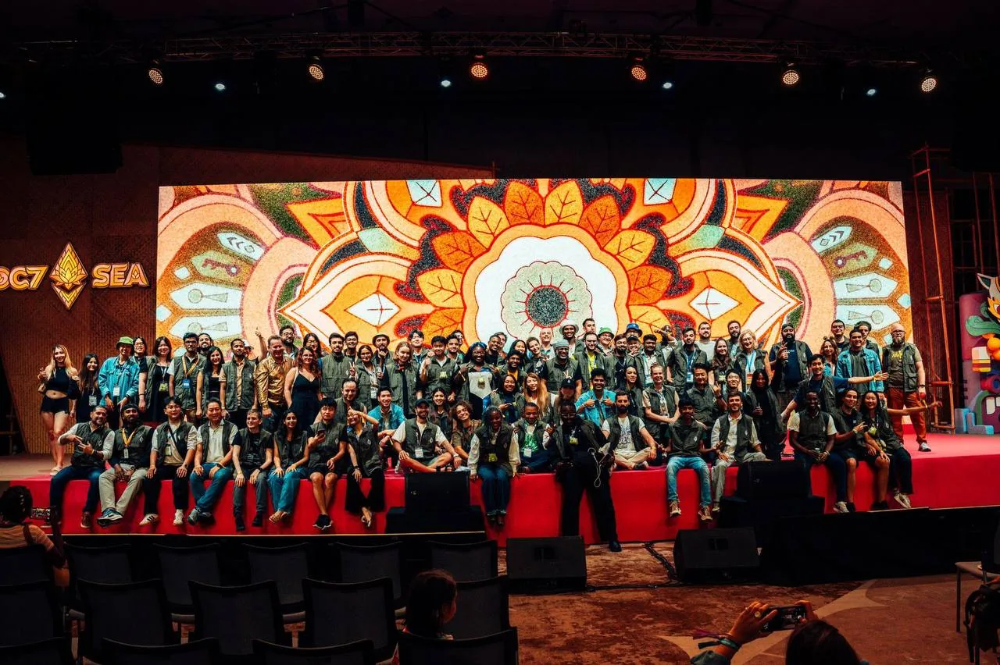

Your job
Check in and out with the Volunteer Attendance Lead. Then stay in your general floor area for the whole shift. You can rotate between General Floor posts, or stay on one if you prefer.
Main activities
- Help attendees with directions and finding rooms. Maps are displayed around the venue.
- As talks let out and queues form, keep people moving so no area congests. Point them to elevators and escalators.
- Answer general Devcon questions. Study the schedule.
- Make sure everyone wears a Devcon wristband, and speak to anyone who does not.
- Watch for unapproved vendors, giveaways and solicitation, and for suspicious behaviour. Escalate straight away.
Every post on the floor checks wristbands. If you see anyone without one, ask them why.
Where volunteers are posted
Devcon has not published its floor plan, so there is no post list yet. Posts on the General Floor tend to fall into these types, and each has the same core job. Post numbers and locations are set by your lead once the Devcon map is released. Mumbai TBC
| Post | What you do |
|---|---|
| Entrances and exits | Check wristbands. Keep the doorway clear and the flow moving in one direction. |
| Registration area | Send unregistered attendees to the desks and guide people coming from talks to the right doors. |
| Session spaces | Direct queues into the halls and keep concourses from congesting. Point people to lifts and escalators. |
| Concourses and walkways | Answer directions questions, check wristbands, keep the space tidy. |
| Community hubs and booths | Help the organisers and answer their questions. |
| Food and refreshment areas | Spread the crowd evenly and answer questions about what is on offer. |
| Speaker area | Only speakers and EF staff go in. Help lost speakers find their rooms. |
| Meeting room floors | Check wristbands on the upper floors and point people to the meeting room desk. |
The building is large and spread over several levels. Read the venue guide before your first shift, and use the venue tour at the in-person training on 1 November to see where the halls, concourses and meeting floors sit.
Important notes
- Stay in constant contact with the stage volunteers so that lost speakers are spotted and sent the right way at once.
- Nobody sets up booths or promotional banners in the venue. The event is meant to stay sponsor neutral.
- If anyone hands out swag of any kind, such as t-shirts, stickers or pins, flag it immediately. Only pre-approved teams may distribute swag, under the code of conduct.
- If the main stage is full for the opening or closing ceremony, send people to the stages where it is streamed.
- Check for wristbands. Always.
Still to confirm
Nothing here is guessed. These items stay marked until the Devcon team confirms them.
- The Devcon floor plan, which halls host what, and the post list.
- How many volunteers each post needs.
- Which entrance and exit gates Devcon will use.
- Food and refreshment areas, and dietary options on offer.
- How speakers and EF staff are identified.